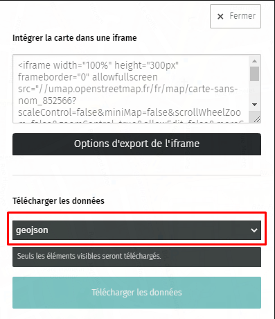
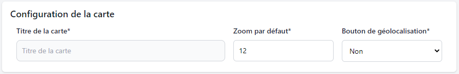
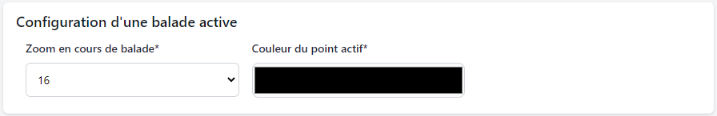

Comment faire ?
Pré-requis :
Vous avez besoin de télécharger un modèle de carte pour le site uMap : cliquer ici pour téléchager le modèle de carte uMap
Étape 1 : Création des données des balades avec uMap
-
1.1 : Ouverture du site et import d'un fichier de configuration
Commencez par aller sur le site uMap pour commencer la création des balades : https://umap.openstreetmap.fr/
Ensuite, cliquer sur le bouton pour importer un exemple de données sur uMap comme sur l'image ci-dessous :
Un panneau s'ouvre alors pour importer un fichier de configuration comme sur la capture ci-dessous. Sélectionnez le fichier carte_balade_exemple.umap que vous avez téléchargé.

Vous pouvez cliquer sur le bouton Importer et le fichier de configuration sera chargé dans uMap (cf. image ci-dessous). Sur la base de ce modèle de données, il est possible de créer les données représentant des balades avec des points d'intérêts. De plus, le style des données sur la carte uMap ne correspondra pas à la carte thématique qui sera déployée.
-
1.2 : Création du parcours d'une balade (entité linéaire)
Pour créer une entité linéaire, vous devez cliquer sur le bouton Dessiner une ligne comme sur la capture ci-dessous :

Ensuite, vous pouvez créer les points du segment sur la carte en cliquant pour chaque point. Pour terminer la création de la balade, il faut cliquer sur le dernier point de segment de la balade et un menu s'ouvre pour renseigner les informations de la balade comme sur la capture ci-dessous :

Si vous n'avez pas le formulaire pour renseigner les informations de la balade, vous pouvez changer le calque de l'élément en Parcours de balade.
Les informations à renseigner pour une balade sont les suivantes :
- Nom : le titre de la balade
- Description : la description de la balade
- Id : l'identifiant de la balade (doit être unique et un entier)
- Couleur : la couleur de la balade sous forme de code hexadécimal exemple : #0380fc (palette de couleurs)
Une fois les informations renseignées, vous pouvez cliquer sur le bouton Fermer pour créer d'autres balades et des points d'intérêt. Vous pouvez passer à l'étape suivante pour créer les points d'intérêt.
-
1.3 : Création d'un point d'intérêt (entité ponctuelle)
Pour créer une entité ponctuelle, vous devez cliquer sur le bouton Ajouter un marqueur comme sur la capture ci-dessous :

Ensuite, vous pouvez créer un point d'intérêt en cliquant sur la carte. Après avoir cliqué sur la carte, un menu s'ouvre pour renseigner les informations du point d'intérêt comme sur la capture ci-dessous :

Si vous n'avez pas le formulaire pour renseigner les informations du point d'intérêt, vous pouvez changer le calque de l'élément en Points d'arrêt.
Les informations à renseigner pour un point d'intérêt sont les suivantes :
- Nom : le titre du point d'intérêt
- Description : la description du point d'intérêt
- Id : l'identifiant du point d'intérêt (doit être unique et un entier)
- Idbalade : l'identifiant de la balade à laquelle le point d'intérêt est rattaché (doit être un entier)
- Rang : le rang du point d'intérêt dans la balade (doit être un entier)
Une fois les informations renseignées, vous pouvez cliquer sur le bouton Fermer pour créer d'autres balades et des points d'intérêt.
-
1.4 : Exporter les données de uMap
Avant d'exporter les données, pensez à supprimer les données d'exemple (pour cela, cliquer sur chaque élément et sélectionner le bouton avec le logo poubelle).
Pour exporter les données de uMap, vous devez cliquer sur le bouton Exporter et partager la carte comme sur la capture ci-dessous :
Ensuite, vous devez sélectionner le format GeoJSON et cliquer sur le bouton Télécharger les données comme sur la capture ci-dessous :
Une fois le fichier GeoJSON téléchargé, vous pouvez passer à l'étape suivante pour les importer sur le formulaire de création d'une carte de balade.
Étape 2 : Utilisation du formulaire de création d'une carte de balade
Le formulaire est disponible depuis le menu en haut en cliquant sur le bouton Paramétrage de la carte ou ici.
-
2.1 : Importer les données GeoJSON sur le formulaire de création de carte de balade
Pour importer les données GeoJSON sur le formulaire de création de carte de balade, vous devez cliquer sur le texte Sélectionner votre fichier GeoJSON généré avec uMap comme sur la capture ci-dessous :
Ensuite, vous devez sélectionner le fichier GeoJSON téléchargé sur uMap et cliquer sur le bouton Ouvrir comme sur la capture ci-dessous :
Une fois le fichier GeoJSON importé, le formulaire avec la carte s'affiche (cf. capture ci-dessous) et vous pouvez passer à l'étape suivante pour paramétrer la carte de balade.
-
2.2 : Comprendre les différents paramètres de la carte de balade
Les champs avec un astérisque (*) sont obligatoires sur le formulaire.
Le formulaire est composé de 4 sections :
- Configuration de la carte : les paramètres de la carte
- Configuration du tracé des balades : les paramètres des entités linéaires de la carte
- Configuration des points d'arrêts des balades : les paramètres des points d'arrêts de la carte
- Configuration d'une balade active : les paramètres lorsqu'une balade est en cours de lecture sur la carte
De plus, le formulaire est composé d'une carte de balade sur le côté droit qui est mise à jour en temps réel en fonction des paramètres renseignés.
-
2.3 : Configuration de la carte
La section Configuration de la carte permet de modifier les paramètres généraux de la carte de balade (cf. capture ci-dessous).
- Titre de la carte* : le titre de la carte MViewer
- Zoom par défaut* : zoom à l'ouverture de la carte de balade sur MViewer, le zoom se modifie automatiquement en fonction du zoom de la carte de visualisation
- Bouton de géolocalisation* : affiche ou non le bouton de géolocalisation sur la carte de balade
-
2.4 : Configuration du tracé des balades
La section Configuration du tracé des balades permet de configurer les entités linéaires (cf. capture ci-dessous).
- Nom du champ identifiant* : champ unique que possède chaque entité linéaire et il peut être détecté et rempli automatiquement par le formulaire
- Afficher les points des balades non séléctionnés ?* :
- Si oui : il permet d'afficher les points de toutes les balades
- Si non : il permet d'afficher uniquement les points de la balade séléctionnée
- La couleur des tracés est-elle personnalisée ? :
- Si oui : la couleur renseigné dans les données de chaque balade sera utilisé pour la couleur des tracés
- Si non : les tracés seront affiché avec la couleur par défaut choisi
- Voulez-vous sélectionner une balade par défaut à l'ouverture de la carte ? :
- Si oui : le premier point de la balade choisi sera sélectionné sur la carte MViewer à l'ouverture de la carte
- Si non : aucune balade sera sélectionné à l'ouverture de la carte
-
2.5 : Configuration des points d'arrêts des balades
La section Configuration des points d'arrêts des balades permet de configurer les points d'intérêt (cf. capture ci-dessous).
- Champ qui fait le lien au tracé* : champ que possède chaque entité ponctuelle indiquant l'id de la balade lié au point et il peut être détecté et rempli automatiquement par le formulaire
- Champ du rang* : champ que possède chaque entité ponctuelle indiquant le rang du point dans la balade et il peut être détecté et rempli automatiquement par le formulaire
-
2.6 : Configuration d'une balade active
La section Configuration d'une balade active permet de configurer la carte lorsqu'une balade est active (cf. capture ci-dessous).
- Zoom en cours de balade* : zoom lorsqu'on parcourt les points d'intérêt des balades
- Couleur du point actif* : couleur du point sélectionné sur la carte
-
2.7 : Confirmation d'envoi du formulaire
Pour confirmer le formulaire, vous pouvez cliquer sur le bouton Envoyer le formulaire (cf. capture ci-dessous).
Un menu s'affichera pour saisir ses informations personnelles (cf. capture ci-dessous).

- Nom et prénom* et email* : ces informations nous permettent de vous recontacter lorsque la carte est déployée sur MViewer
- Commentaire : si vous avez des informations complémentaires à nous donner
Merci pour la lecture, le service SIG